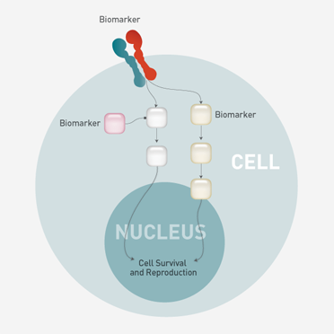

什么是癌症生物标志物和癌症基因改变？
癌症生物标志物通常指的是与癌症发生、生长、分裂、死亡相关的蛋白、基因和其他小分子。以前这些癌症标志物可以被用来预测癌症生长的速度，可以被用来诊断癌症，现在这些生物标志物可以被用来揭示一个癌症患者对哪种特定的治疗药物有效。癌症有许多生物标志物，他们每一种都在体内发挥不同的作用，并且对不同的治疗有效。癌症生物标志物包括：蛋白、基因突变、基因重排、基因extra copies、基因丢失、其他促进细胞不正常生长和分裂的生物标志物

什么是癌症精准治疗（靶向治疗）？
癌症精准治疗（靶向治疗）
癌症精准治疗（靶向治疗）有时指的是所有个性化治疗，但是真正的癌症精准治疗（靶向治疗）是与身体内特定的分子学层面相互作用的治疗。例如某些抗体和特殊小分子物质，他么能够促进和抑制某些分子水平和细胞水平活动。尽管靶向治疗听起来比标准治疗更加安全，患者也更容易耐受，但不全是这样。和化疗一样，靶向治疗一样有严重的副作用，例如毒性反应。
对肿瘤细胞进行基因检测可以帮助你的主治医生为你制定个性化治疗方案。
基因检测可以确定你的癌症基因图谱，然后通过循证医学把你的基因图谱和已经发表的癌症研究匹配。世界各国权威肿瘤学家已经进行了大量和基因检测相关的癌症治疗研究，积累了大量治疗癌症的有效方案。基因检测就是通过这些询证医学证据指导癌症治疗。
这种循证医学支持的癌症个性化治疗能够帮助那些罹患各种癌症的患者，包括癌症进展期患者、罕见肿瘤患者和其他治疗选择很少的患者。另外，基因检测可以帮助你的医生更加准确的选择治疗方案。避免患者反复就诊。